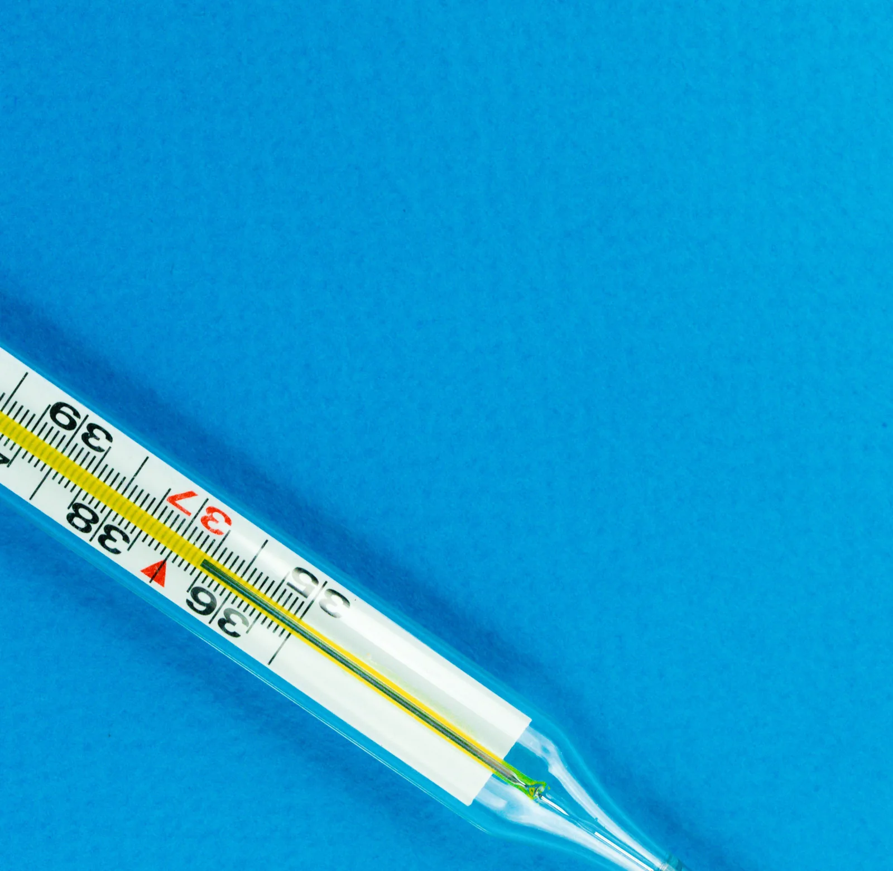

Termodynaaminen systeemi, tilanmuuttujat ja lämpötila
Miksi pyörän rengas tuntuu kovemmalta kuumana kesäpäivänä kuin pakkasella, vaikka renkaaseen ei pumpata lisää ilmaa?
Pohjatiedot
- Celsiusasteikko: vesi jäätyy $0\,{}^\circ\text{C}$:ssa ja kiehuu $100\,{}^\circ\text{C}$:ssa normaalipaineessa (yläkoulun fysiikka)
- Renkaaseen pumpattu lisäilma tekee siitä kovemman (arkikokemus)
Ydinpolku: tee vaiheet järjestyksessä. Ydinpolulla ei vain lasketa. Siinä myös tutkitaan, selitetään ja piirretään kuvaajia. Valinnainen-tehtävät ovat lisäharjoittelua. Valinnaisia tehtäviä on 7.
Luvun tärkeät käsitteet Vapaaehtoinen
Tutustu luvun tärkeisiin käsitteisiin. Voit kirjoittaa niiden merkitykset sinulle vahvimmalla kielellä tai useammalla kielellä.
- Systeemi
- Se kappale tai aine, jota tutkitaan. Kaikki muu on ympäristöä.
- Tilanmuuttuja
- Suure, joka kuvaa systeemin tilaa, esimerkiksi paine, tilavuus tai lämpötila.
- Paine
- Kertoo, kuinka suuri voima kohdistuu eli osuu pinnalle pinta-alaa kohti. Kaasun paine syntyy hiukkasten törmäyksistä.
- Lämpötila
- Kertoo, kuinka voimakkaasti aineen hiukkaset liikkuvat. Lämpötila ei ole sama asia kuin aineen energia.
- Absoluuttinen nollapiste
- Alin mahdollinen lämpötila. Se on kelvinasteikon nollakohta.
Pohdinta
Pyörä on yön pakkasessa ulkona. Aamulla rengas painuu peukalon alla. Iltapäivällä sama pyörä on seissyt auringossa, ja rengas on kova. Venttiili on ollut kiinni koko ajan, joten renkaassa on sama ilma. Kumi venyy niin vähän, että renkaan tilavuus pysyy lähes samana. Ainoa muutos on ilman lämpötila.
Mitä renkaan sisällä olevalle ilmalle tapahtuu, kun se lämpenee? Miksi ilman paine renkaassa silloin kasvaa?
Valinnainen Kertaa: miksi rengas kovenee?
Ennusta
Tee ennusteet ennen tutkimista 3 kysymystä
Ennuste 1: kaasu lämpenee
Valinnainen Ennuste 2: astia pienenee
Ennuste 3: miksi lämpimän kaasun paine on suurempi?
Tutki
Simulaatio
Mallin oletukset
Malli on yksinkertaistettu. Se on kaksiulotteinen, hiukkaset eivät törmää toisiinsa, ja kaikilla hiukkasilla on sama nopeus, jonka lämpötila määrää. Kun hiukkaset liikkuvat nopeammin, ne osuvat seinään useammin ja kovempaa. Kun astia on pienempi, ne osuvat seinään useammin. Molemmissa tapauksissa paine kasvaa. Mitattu paine vaihtelee hieman teoria-arvon ympärillä.
Laskennan selitys
Paine on suhteellinen luku (100 = $300\,\text{K}$ ja 1,0 dm³). Mitattu paine lasketaan hiukkasten törmäyksistä seinään viimeisen 1,5 sekunnin ajalta, joten se vaihtelee hieman. Teoria on mallin laskema arvo. Nopeus muuttaa vain animaation tahtia. Paine lasketaan simuloidun ajan mukaan, joten nopeus ei muuta mitattua arvoa.
Simulaatio on kaasun mikromalli. Astiassa liikkuu 80 hiukkasta, jotka kimpoavat seinistä. Kokeile vapaasti, mitä lämpötila ja tilavuus tekevät hiukkasille ja paineelle.
Koe 1: vain lämpötila muuttuu
Testaa ennusteet 1 ja 3. Tilavuus on lukittu 1,0 dm³:iin, ja vain lämpötila muuttuu. Kirjaa paine ja hiukkasten keskinopeus $v$ ainakin kahdessa lämpötilassa, esimerkiksi $150\,\text{K}$, $300\,\text{K}$ ja $600\,\text{K}$. Keskinopeus on suhteessa $300\,\text{K}$:n keskinopeuteen. Odota säädön jälkeen pari sekuntia. Silloin mitattu paine ehtii asettua uuteen arvoonsa. Vertaa kelvinlämpötilojen suhdetta paineiden suhteeseen.
Alkutila: $T$ = $300\,\text{K}$, $V$ = $1\,\text{dm}^3$. Vakiona: $V$. Muutetaan: $T$.
| $T$ | $\theta$ (°C) | $v$ (suht.) | $p$ mitattu | $p$ teoria |
|---|
Lisää tutkittavaa 2 tehtävää
Valinnainen Lisätutkimus: vain tilavuus muuttuu
Testaa ennuste 2. Lämpötila on lukittu $300\,\text{K}$:iin, ja vain tilavuus muuttuu. Kirjaa paine ja hiukkasten keskinopeus $v$ ainakin kahdella tilavuudella, esimerkiksi 2,0 dm³ ja 1,0 dm³. Keskinopeus on suhteessa $300\,\text{K}$:n keskinopeuteen. Odota säädön jälkeen pari sekuntia ennen kirjaamista. Muuttuuko hiukkasten nopeus? Mikä silloin kasvattaa painetta?
Alkutila: $T$ = $300\,\text{K}$, $V$ = $2\,\text{dm}^3$. Vakiona: $T$. Muutetaan: $V$.
| $V$ | $v$ (suht.) | $p$ mitattu | $p$ teoria |
|---|
Johtopäätös: lämpötila, nopeus ja paine
Kirjoita kokeen 1 taulukon perusteella lyhyt johtopäätös.
Kuinka monikertaiseksi paine kasvoi, kun kelvinlämpötila kaksinkertaistui? Kuinka paljon hiukkasten nopeus kasvoi? Miten mikromalli selittää, että paine kasvaa nopeutta enemmän? Miksi lämpötilojen suhde pitää laskea kelvineinä?
Mallivastaus
Kun lämpötila nousi $300\,\text{K}$:stä $600\,\text{K}$:iin, mitattu paine kaksinkertaistui (noin $100 \to 200$). Hiukkasten nopeus kasvoi vain noin $1{,}41$-kertaiseksi. Nopeammat hiukkaset osuvat seinään sekä useammin että kovempaa. Siksi paine kasvaa kahdesta syystä ja on verrannollinen kelvinlämpötilaan. Celsiusasteina sama muutos on $27\,{}^\circ\text{C} \to 327\,{}^\circ\text{C}$ eli yli kymmenkertainen, mutta paine vain kaksinkertaistui. Paine seuraa siis kelvinlämpötilaa. Simulaation mitattu paine syntyy laskemalla simuloituja törmäyksiä, joten se vaihtelee hieman. Mallin oletus, että nopeus määräytyy lämpötilasta, on kuitenkin mallin osa eikä mittaustulos.
Arvioi oma vastauksesi
Merkitse kohdat, jotka sinun vastauksessasi jo on.
Kertaa asia teoriasta ja harjoittele tehtävillä.
Teoria
Ydinajatus
Kun tutkit ilmiötä, rajaat tutkittavan osan erilleen muusta maailmasta. Rajattu osa on termodynaaminen systeemi. Kaikki sen ulkopuolella on ympäristö. Pyörän renkaan ilma on esimerkki systeemistä. Jos systeemistä ei pääse ainetta ulos eikä sisään, systeemi on suljettu. Systeemin tilaa kuvataan tilanmuuttujilla. Tilanmuuttujia ovat lämpötila, paine ja tilavuus sekä aineen määrä. Paine on voima pinta-alaa kohti. Paineen yksikkö on pascal (Pa), ja $1\,\text{kPa} = 1000\,\text{Pa}$. Paineeseen tutustutaan tarkemmin myöhemmin. Kun muutat kaasusysteemissä yhtä tilanmuuttujaa, vähintään yksi muista muuttuu myös.
Miksi näin käy? Sen selittää aineen mikromalli. Kaasu koostuu hiukkasista. Hiukkaset liikkuvat jatkuvasti joka suuntaan. Ne törmäilevät toisiinsa ja astian seinämiin. Kaasun lämpötila kertoo hiukkasten keskimääräisestä liike-energiasta. Mitä kuumempaa kaasu on, sitä nopeammin hiukkaset liikkuvat keskimäärin. Paine syntyy, kun hiukkaset törmäävät seinämään. Jokainen törmäys työntää seinää hieman. Oletetaan, että tilavuus pienenee ja lämpötila pysyy samana. Silloin hiukkasilla on vähemmän tilaa, ja ne osuvat seinään useammin. Siksi paine kasvaa, mutta yksittäinen törmäys ei muutu kovemmaksi. Oletetaan sitten, että lämpötila nousee mutta tilavuus pysyy samana. Silloin hiukkaset osuvat seinään sekä useammin että kovempaa. Siksi paine kasvaa. Tästä syystä rengas tuntuu kesällä kovemmalta.
Kuva on kaaviokuva: nuolen pituus kuvaa hiukkasen nopeutta. Astiat ovat yhtä suuret, ja niissä on yhtä monta hiukkasta.
Lämpötilaa mitataan celsiusasteikolla ja kelvinasteikolla. Celsiusasteikolla $0\,{}^\circ\text{C}$ on veden jäätymispiste ja $100\,{}^\circ\text{C}$ on veden kiehumispiste normaalipaineessa. Kelvinasteikon nollapiste on absoluuttinen nollapiste. Se on alin mahdollinen lämpötila. Siinä hiukkasten keskimääräinen liike-energia on pienimmillään, eikä kylmempää voi olla. Celsiusaste ja kelvin ovat yhtä suuria. Siksi lämpötilaero on sama kelvineinä ja celsiusasteina. Oletetaan, että tilavuus ja kaasun määrä pysyvät samoina. Oletetaan myös, että kaasu on harvaa eli kaukana nesteytymisestä. Silloin kaasun paine on suoraan verrannollinen kelvinlämpötilaan. Myös harvan kaasun hiukkasten keskimääräinen liike-energia on suoraan verrannollinen kelvinlämpötilaan. Siksi lämpötilojen suhteita verrataan kelvineinä. Paineen, tilavuuden ja lämpötilan yhteyttä tutkitaan tarkemmin luvussa Kaasujen tilanmuutokset ja Boylen laki.

Mallin rajat
Lause ”lämpötila kertoo hiukkasten keskimääräisestä liike-energiasta” on sellaisenaan totta vain harvalle kaasulle. Harvassa kaasussa hiukkaset vaikuttavat toisiinsa vain törmätessään. Silloin lämpötila on verrannollinen hiukkasten etenemisliikkeen keskimääräiseen liike-energiaan. Nesteessä ja kiinteässä aineessa hiukkaset ovat lähellä toisiaan. Ne värähtelevät, ja naapurit vetävät niitä. Lämpötila kuvaa niissäkin hiukkasten lämpöliikkeen voimakkuutta. Aineen energiaan kuuluu kuitenkin myös hiukkasten välisten vuorovaikutusten energia. Siksi lämpötila ei ole sama asia kuin aineen energia. Jäällä ja vedellä voi olla sama lämpötila $0\,{}^\circ\text{C}$, mutta samamassaisessa vedessä on enemmän sisäenergiaa kuin jäässä (luvut Sisäenergia, lämpömäärä ja energian säilyminen ja Olomuodon muutokset). Absoluuttisessa nollapisteessäkään kaikki hiukkasten liike ei lakkaa. Sen energia on kuitenkin pienin mahdollinen.
Kelvinasteikko
Celsiuslämpötila $\theta$ ja kelvinlämpötila $T$ liittyvät toisiinsa. Niiden lukuarvoille pätee yhtälö
$$\frac{T}{\text{K}} = \frac{\theta}{{}^\circ\text{C}} + 273{,}15$$
Esimerkiksi $20\,{}^\circ\text{C}$ on sama lämpötila kuin $293{,}15\,\text{K}$. Lämpötilaero on kelvineinä ja celsiusasteina sama luku. Kun lämpötila nousee $20\,{}^\circ\text{C}$:sta $30\,{}^\circ\text{C}$:seen, nousu on $10\,\text{K}$. Käytännössä riittää usein luku 273. Kelvineille ei käytetä sanaa aste. Sanotaan ”300 kelviniä”, ei ”300 kelvinastetta”.
Absoluuttinen nollapiste on siis $0\,\text{K}$ = $-273{,}15\,{}^\circ\text{C}$. Kelvinlämpötila ei voi olla negatiivinen. Celsiuslämpötila voi olla negatiivinen.
Kuva on piirretty mittakaavassa. Yläasteikko on kelvinasteikko ja alaasteikko celsiusasteikko. Väli $0\,{}^\circ\text{C}$:sta $100\,{}^\circ\text{C}$:een on yhtä pitkä kuin väli $273{,}15\,\text{K}$:sta $373{,}15\,\text{K}$:iin.
Yleinen virhekäsitys
Moni ajattelee, että lämpötila kaksinkertaistuu, kun se nousee $10\,{}^\circ\text{C}$:sta $20\,{}^\circ\text{C}$:een. Fysikaalisesti oikea vertailu tehdään kelvineinä: $283\,\text{K}$:sta $293\,\text{K}$:iin. Lämpötilojen suhde on 293/283 ≈ 1,035, eli nousu on noin $3{,}5\,\%$. Siksi hiukkasten keskimääräinen liike-energia ei kaksinkertaistu. Toinen virhe on pitää $0\,{}^\circ\text{C}$:ta alimpana mahdollisena lämpötilana. Se on vain veden jäätymispiste. Alin mahdollinen lämpötila on $0\,\text{K}$.
Tiivistelmä
- Termodynaaminen systeemi on rajattu osa maailmaa. Sen tilaa kuvaavat tilanmuuttujat: lämpötila, paine, tilavuus ja aineen määrä.
- Kaasusysteemissä lämpötila, paine ja tilavuus riippuvat toisistaan. Jos yhtä muutetaan, vähintään yksi muista muuttuu myös.
- Kaasun mikromalli: lämpötila kertoo hiukkasten keskimääräisestä liike-energiasta. Paine syntyy hiukkasten törmäyksistä seinämään. Nesteessä ja kiinteässä aineessa energiaan kuuluu myös hiukkasten välisten vuorovaikutusten energia. Siksi lämpötila ei ole sama asia kuin aineen energia.
- Kun tilavuus ja aineen määrä pysyvät samoina, harvan kaasun paine on suoraan verrannollinen kelvinlämpötilaan. Mittapisteiden suoran jatkaminen eli ekstrapolointi antaa arvion absoluuttisesta nollapisteestä.
- Muunnos on $\tfrac{T}{\text{K}} = \tfrac{\theta}{{}^\circ\text{C}} + 273{,}15$. Absoluuttinen nollapiste on $0\,\text{K}$ = $-273{,}15\,{}^\circ\text{C}$.
Valinnainen Palaa ennusteisiisi
Vertaa ennusteitasi kokeiden tuloksiin ja mikromalliin. Palaa sitten alun kysymykseen. Miksi pyörän rengas on kova auringossa ja pehmeä pakkasella, vaikka sen ilma on sama? Käytä selityksessäsi sanoja lämpötila, hiukkasten nopeus ja törmäykset.
Haluaisitko muuttaa ennustettasi?
Esimerkit
Kun olet lukenut teorian, tee ohjatut esimerkit. Ensin katsot mallilaskun vaihe vaiheelta. Sitten teet valinnat itse. Vihjeet auttavat, jos jäät jumiin.
Esimerkki 1: Paineen nollakohta
Suljetussa jäykässä astiassa on kaasua. Siksi sen tilavuus ja aineen määrä pysyvät samoina. Kaasun paine mitataan eri lämpötiloissa:
| $\theta$ (°C) | 0 | 20 | 40 | 60 | 80 | 100 |
|---|---|---|---|---|---|---|
| $p$ (kPa) | 100 | 107 | 115 | 122 | 129 | 137 |
Määritä ekstrapoloimalla lämpötila, jossa kaasun paine olisi nolla.
Vaihe 1/7
Tunnetut ja kysytty. Taulukossa on kuusi mittapistettä $(\theta,\, p)$. Paine on $p_0 = 100\,\text{kPa}$ lämpötilassa $0\,{}^\circ\text{C}$. Kysytään lämpötilaa $\theta_0$, jossa paine olisi nolla. Pisteet ovat kuvaajassa suoralla. Paine kasvaa jokaista $20\,{}^\circ\text{C}$ kohti $7$–$8\,\text{kPa}$. Suoraa jatketaan vasemmalle, mittausalueen ulkopuolelle. Tätä sanotaan ekstrapoloinniksi.
Pystyakseli on piirretty kuvan vasempaan reunaan, noin $-300\,{}^\circ\text{C}$:n kohdalle, eikä kohtaan $\theta = 0$. Yhtenäinen suora on mittausalue ja katkoviiva on ekstrapolointi.
Vaihe 2/7
Periaate. Astia on suljettu ja jäykkä. Siksi kaasun määrä ja tilavuus pysyvät samoina, ja paine riippuu vain lämpötilasta. Mittapisteet ovat suoralla, joten paine muuttuu lämpötilan mukana tasaisesti. Suoran yhtälö antaa arvion paineesta myös mittausalueen ulkopuolella. Arvio pätee, jos oletetaan, että riippuvuus pysyy samanlaisena. Nollapaine on kohdassa, jossa suora leikkaa lämpötila-akselin.
Vaihe 3/7
Kaava ratkaistuna. Kulmakerroin $k$ lasketaan kahdesta kaukana toisistaan olevasta suoran pisteestä. Tässä mittapisteet ovat lukutarkkuuden rajoissa suoralla. Siksi mittausalueen päätepisteet ovat myös suoran pisteitä. Suoran yhtälössä $p_0$ on paine lämpötilassa $0\,{}^\circ\text{C}$. Asetetaan $p = 0$ ja ratkaistaan $\theta_0$:
$$\begin{aligned} k &= \frac{\Delta p}{\Delta \theta} \\[4pt] p &= p_0 + k\theta \\ 0 &= p_0 + k\theta_0 \\ \theta_0 &= -\frac{p_0}{k} \end{aligned}$$
Vaihe 4/7
Yksikkömuunnokset. Muunnoksia ei tarvita. Paineet ovat jo kilopascaleina. Lämpötilaero $\Delta\theta$ on sama celsiusasteina ja kelvineinä. Siksi kulmakertoimen yksikkö $\tfrac{\text{kPa}}{{}^\circ\text{C}}$ on myös $\tfrac{\text{kPa}}{\text{K}}$. Tulos saadaan suoraan celsiusasteina, koska taulukon lämpötilat ovat celsiusasteina.
Vaihe 5/7
Sijoitus. Lasketaan ensin kulmakerroin ja sitten nollakohta:
$$\begin{aligned} &k = \frac{\Delta p}{\Delta \theta} \\ &= \frac{(137 - 100)\,\text{kPa}}{(100 - 0)\,{}^\circ\text{C}} \\ &= 0{,}37\,\tfrac{\text{kPa}}{{}^\circ\text{C}} \\[6pt] &\theta_0 = -\frac{p_0}{k} \\ &= -\frac{100\,\text{kPa}}{0{,}37\,\tfrac{\text{kPa}}{{}^\circ\text{C}}} \\ &= -270{,}27\,{}^\circ\text{C} \end{aligned}$$
Vaihe 6/7
Tulos. Nollapaineen lämpötila on noin $-270\,{}^\circ\text{C}$. Tulos ilmoitetaan kahdella merkitsevällä numerolla. Syy on se, että kulmakerroin $0{,}37\,\tfrac{\text{kPa}}{{}^\circ\text{C}}$ tunnetaan vain kahden numeron tarkkuudella.
Vaihe 7/7
Järkevyys. Tulos on lähellä absoluuttista nollapistettä $-273{,}15\,{}^\circ\text{C}$. Ero on vain noin $3\,{}^\circ\text{C}$ eli yksi prosentti. Tehdään vielä riippumaton tarkistus. Jos paine on verrannollinen kelvinlämpötilaan, $p = 100\,\text{kPa}$ vastaa lämpötilaa $273{,}15\,\text{K}$. Silloin paine lämpötilassa $100\,{}^\circ\text{C}$ olisi $100\,\text{kPa} \cdot \tfrac{373{,}15}{273{,}15} = 136{,}6\,\text{kPa}$. Mitattu arvo on $137\,\text{kPa}$. Mikromallin mukaan nollapaineessa hiukkasten liike olisi niin vähäistä, ettei paine enää syntyisi. Todelliset kaasut nesteytyvät jo ennen tätä lämpötilaa. Siksi suoran jatke on vain malli, ja se kuvaa raja-arvoa.
Valinnainen Esimerkki 2: Etsi virhe
Valinnainen Esimerkki 3: Sovella uuteen tilanteeseen
Lasipurkki suljetaan tiiviillä kannella huoneessa. Ilman lämpötila on $20\,{}^\circ\text{C}$ ja paine $101\,\text{kPa}$. Purkki lämmitetään vesihauteessa, kunnes sen sisällä olevan ilman lämpötila on $80\,{}^\circ\text{C}$. Purkin tilavuus ja ilman määrä pysyvät samoina.
Mikä on purkin ilman paine? Vastaa kilopascaleina.
Vihje 1: ohjaava kysymys
Mitkä tilanmuuttujat pysyvät samoina ja mitkä muuttuvat? Millä asteikolla lämpötilojen suhde pitää laskea?
Vihje 2: mikä yhteys
Tilavuus ja aineen määrä pysyvät samoina. Silloin paine on suoraan verrannollinen kelvinlämpötilaan: $\dfrac{p_2}{p_1} = \dfrac{T_2}{T_1}$, eli $p_2 = p_1 \dfrac{T_2}{T_1}$.
Vihje 3: välivaihe
Muunna ensin: $T_1 = 293{,}15\,\text{K}$ ja $T_2 = 353{,}15\,\text{K}$. Sijoita:
Näytä ratkaisu
Annettu
ilma suljetussa purkissa, $\theta_1 = 20\,{}^\circ\text{C}$, $p_1 = 101\,\text{kPa}$, $\theta_2 = 80\,{}^\circ\text{C}$. Purkin tilavuus ja ilman määrä pysyvät samoina
Kysytty
ilman paine $p_2$ kilopascaleina
Periaate
Tilavuus ja ilman määrä ovat vakiot (ne eivät muutu). Siksi paine on suoraan verrannollinen kelvinlämpötilaan. Lämpimämmän ilman hiukkaset liikkuvat nopeammin. Ne törmäävät seinään useammin ja kovemmin. Verrannollisuus ei päde celsiuslämpötilaan.
Kaava
$\dfrac{p_2}{p_1} = \dfrac{T_2}{T_1}$, josta
$$p_2 = p_1\,\frac{T_2}{T_1}$$
Muunnokset
Lämpötilat muutetaan kelvineiksi:
Paine pysyy kilopascaleina.
Sijoitus
Vastaus
$122\,\text{kPa}$
Vastauksessa on kolme merkitsevää numeroa, kuten paineessa $101\,\text{kPa}$.
Järkevyys
Kelvinlämpötila nousee $60\,\text{K}$ eli noin $\dfrac{60}{293} \approx 20\,\%$. Siksi paine nousee noin $0{,}20 \cdot 101\,\text{kPa} \approx 21\,\text{kPa}$. Tarkistus: $101 + 21 \approx 122\,\text{kPa}$. Lämpötila nousee, joten paineen pitää kasvaa. Celsiusasteiden suhde $\tfrac{80}{20} = 4$ antaisi liian suuren paineen $404\,\text{kPa}$. Purkin paine on suurempi kuin ulkoilman paine $101\,\text{kPa}$. Siksi kansi painuu ulospäin.
Kertaa luvun käsitteet
Jos valitset Kertaa myöhemmin, kortti menee kertauspakkaasi.
- Lämpötila
- Kuvaa aineen rakenneosasten lämpöliikkeen voimakkuutta.
- Kelvinasteikko
- Absoluuttinen lämpötila-asteikko, jonka nollakohta $0\,\text{K}$ on alin mahdollinen lämpötila.
- Absoluuttinen nollapiste
- Alin mahdollinen lämpötila on $0\,\text{K}$ eli $-273{,}15\,{}^{\circ}\text{C}$.
- Lämpöliike
- Aineen rakenneosasten jatkuvaa satunnaista liikettä ja värähtelyä.
- Tilanmuuttuja
- Systeemin tilaa kuvaava suure, kuten lämpötila, paine tai tilavuus.
- Termodynaaminen systeemi
- Tarkasteltavaksi rajattu aine tai alue, jonka energian muutoksia tutkitaan.
- Avoin systeemi
- Ympäristön kanssa voi vaihtua sekä ainetta että energiaa.
- Suljettu systeemi
- Ympäristön kanssa voi vaihtua energiaa mutta ei ainetta.
- Eristetty systeemi
- Ympäristön kanssa ei vaihdu ainetta eikä energiaa.
- Lämpötasapaino
- Kosketuksissa olevien systeemien lämpötilat ovat tasoittuneet samoiksi.
Tehtävät
Taso 1 · perusharjoitus 9 tehtävää
Yksi kaava tai yksi päättelyaskel. Tee ensin ydintehtävät. Loput ovat lisäharjoitusta.
- Tehtävä 3-1
Huoneen lämpötila on $21\,{}^\circ\text{C}$. Mikä lämpötila on kelvineinä?
Vastaus
$294\,\text{K}$
Näytä ratkaisu
Annettu
$\theta = 21\,{}^\circ\text{C}$
Kysytty
lämpötila kelvineinä, $T$
Periaate
Kelvin ja celsiusaste ovat yhtä suuria. Asteikot eroavat vain nollakohdaltaan: $0\,{}^\circ\text{C}$ on $273{,}15\,\text{K}$. Kelvinlukema saadaan siis lisäämällä celsiuslukemaan $273{,}15$.
Kaava
$\tfrac{T}{\text{K}} = \tfrac{\theta}{{}^\circ\text{C}} + 273{,}15$. Kaava on jo valmiiksi ratkaistu kysytylle suureelle $T$.
Muunnokset
Celsiuslämpötila muutetaan kelvineiksi tässä kaavassa. Muita yksikkömuunnoksia ei tarvita.
Sijoitus
$T$$= (21 + 273{,}15)\,\text{K}$$= 294{,}15\,\text{K}$Vastaus
$294\,\text{K}$
Vastaus annetaan täysinä kelvineinä, koska lämpötila $21\,{}^\circ\text{C}$ on annettu täysinä asteina.
Järkevyys
Huonelämpötila on noin $20\,{}^\circ\text{C}$. Arvio on siis $20 + 273 \approx 293\,\text{K}$, ja tulos on lähellä sitä. Lasketaan vielä takaisin: $294{,}15 - 273{,}15 = 21$. Muunnos palaa siis lähtöarvoon. Kelvinlämpötila on positiivinen, kuten pitää.
- Tehtävä 3-2
Kaasun lämpötila on $350\,\text{K}$. Mikä lämpötila on celsiusasteina?
Vastaus
$77\,{}^\circ\text{C}$
Näytä ratkaisu
Annettu
$T = 350\,\text{K}$
Kysytty
lämpötila celsiusasteina, $\theta$
Periaate
Kelvin- ja celsiusasteikon välit ovat yhtä suuret. Nollakohtien ero on $273{,}15$. Celsiuslukema saadaan siis vähentämällä kelvinlukemasta $273{,}15$.
Kaava
$\tfrac{T}{\text{K}} = \tfrac{\theta}{{}^\circ\text{C}} + 273{,}15$, josta $\tfrac{\theta}{{}^\circ\text{C}} = \tfrac{T}{\text{K}} - 273{,}15$
Muunnokset
Kelvinlämpötila muutetaan celsiusasteiksi tämän kaavan avulla. Muita yksikkömuunnoksia ei tarvita.
Sijoitus
$\theta$$= (350 - 273{,}15)\,{}^\circ\text{C}$$= 76{,}85\,{}^\circ\text{C}$Vastaus
$77\,{}^\circ\text{C}$
Vastaus annetaan täysinä asteina, koska $350\,\text{K}$ on annettu täysinä kelvineinä.
Järkevyys
Veden kiehumispiste normaalipaineessa on $373\,\text{K}$ eli $100\,{}^\circ\text{C}$. Lämpötila $350\,\text{K}$ on $23\,\text{K}$ sen alapuolella. Arvio on siis $100 - 23 = 77\,{}^\circ\text{C}$. Tulos on myös yli nollan, koska $350\,\text{K} > 273\,\text{K}$. Lasketaan vielä takaisin: $76{,}85 + 273{,}15 = 350$.
- Tehtävä 3-3
Nestemäisen typen kiehumispiste on $77{,}4\,\text{K}$. Mikä se on celsiusasteina?
Vastaus
$-196\,{}^\circ\text{C}$
Näytä ratkaisu
Annettu
$T = 77{,}4\,\text{K}$
Kysytty
lämpötila celsiusasteina, $\theta$
Periaate
Celsius- ja kelvinasteikon välit ovat yhtä suuret. Nollakohtien ero on $273{,}15$. Siksi $\theta$ saadaan vähentämällä kelvinlukemasta $273{,}15$. Kaava pätee myös silloin, kun tulos on negatiivinen.
Kaava
$\tfrac{T}{\text{K}} = \tfrac{\theta}{{}^\circ\text{C}} + 273{,}15$, josta $\tfrac{\theta}{{}^\circ\text{C}} = \tfrac{T}{\text{K}} - 273{,}15$
Muunnokset
Kelvinlämpötila muutetaan celsiusasteiksi tämän kaavan avulla. Muita yksikkömuunnoksia ei tarvita.
Sijoitus
$\theta$$= (77{,}4 - 273{,}15)\,{}^\circ\text{C}$$= -195{,}75\,{}^\circ\text{C}$Vastaus
$-196\,{}^\circ\text{C}$
Vastauksessa on kolme merkitsevää numeroa, kuten arvossa $77{,}4\,\text{K}$. Tarkka vakio $273{,}15$ ei rajoita tarkkuutta. Desimaalin tarkkuudella tulos olisi $-195{,}8\,{}^\circ\text{C}$.
Järkevyys
Typpi on ilman pääainesosa. Se muuttuu nesteeksi vasta hyvin kylmässä. Tulos on selvästi alle veden jäätymispisteen $0\,{}^\circ\text{C}$. Se on kuitenkin yli absoluuttisen nollapisteen $-273{,}15\,{}^\circ\text{C}$. Lasketaan vielä takaisin: $-195{,}75 + 273{,}15 = 77{,}4\,\text{K}$. Arvio: $77 - 273 \approx -196$.
- Tehtävä 3-4
Veden lämpötila nousee $20\,{}^\circ\text{C}$:sta $45\,{}^\circ\text{C}$:een. Kuinka suuri lämpötilan muutos on kelvineinä?
Vastaus
$25\,\text{K}$
Näytä ratkaisu
Annettu
$\theta_1 = 20\,{}^\circ\text{C}$, $\theta_2 = 45\,{}^\circ\text{C}$
Kysytty
lämpötilan muutos kelvineinä, $\Delta T$
Periaate
Celsiusaste ja kelvin ovat yhtä suuria. Asteikkojen nollakohdat eroavat vain vakiolla $273{,}15$. Vakio supistuu pois, kun lasketaan erotus. Siksi lämpötilan muutos on sama kummallakin asteikolla.
Kaava
$\Delta T = T_2 - T_1$. Koska $T/\text{K} = \theta/{}^\circ\text{C} + 273{,}15$, vakio $273{,}15$ kumoutuu: $\Delta T/\text{K} = (\theta_2 - \theta_1)/{}^\circ\text{C}$
Muunnokset
Muunnosta ei tarvita. Lämpötilan muutos on sama celsiusasteina ja kelvineinä. Vain yksikkö vaihtuu.
Sijoitus
$\Delta T$$= (45 - 20)\,\text{K}$$= 25\,\text{K}$Vastaus
$25\,\text{K}$
Vastauksessa on kaksi merkitsevää numeroa, kuten annetuissa lämpötiloissa.
Järkevyys
Tarkistetaan kelvineinä: $T_1 = 293{,}15\,\text{K}$ ja $T_2 = 318{,}15\,\text{K}$. Ero on $318{,}15 - 293{,}15 = 25\,\text{K}$. Etumerkki on positiivinen, koska vesi lämpenee.
- Tehtävä 3-5
Maailmankaikkeuden taustasäteilyn lämpötila on $2{,}7\,\text{K}$. Mikä se on celsiusasteina?
Vastaus
$-270\,{}^\circ\text{C}$
Näytä ratkaisu
Annettu
$T = 2{,}7\,\text{K}$
Kysytty
lämpötila celsiusasteina, $\theta$
Periaate
Celsius- ja kelvinasteikon välit ovat yhtä suuret. Nollakohtien ero on $273{,}15$. Siksi $\theta$ saadaan vähentämällä kelvinlukemasta $273{,}15$. Kelvinlukema on pieni, joten tulos on negatiivinen.
Kaava
$\tfrac{T}{\text{K}} = \tfrac{\theta}{{}^\circ\text{C}} + 273{,}15$, josta $\tfrac{\theta}{{}^\circ\text{C}} = \tfrac{T}{\text{K}} - 273{,}15$
Muunnokset
Kelvinlämpötila muutetaan celsiusasteiksi tämän kaavan avulla. Muita yksikkömuunnoksia ei tarvita.
Sijoitus
$\theta$$= (2{,}7 - 273{,}15)\,{}^\circ\text{C}$$= -270{,}45\,{}^\circ\text{C}$Vastaus
$-270\,{}^\circ\text{C}$
Vastauksessa on kaksi merkitsevää numeroa, kuten arvossa $2{,}7\,\text{K}$. Tarkka vakio $273{,}15$ ei rajoita tarkkuutta. Desimaalin tarkkuudella tulos olisi $-270{,}5\,{}^\circ\text{C}$.
Järkevyys
Lämpötila on vain $2{,}7\,\text{K}$ absoluuttisen nollapisteen yläpuolella. Siksi sen täytyy olla vain vähän yli $-273{,}15\,{}^\circ\text{C}$: $-273{,}15 + 2{,}7 = -270{,}45$. Tulos ei ole alle absoluuttisen nollapisteen. Niin ei saakaan olla.
- Tehtävä 3-6Ydintehtävä
Kaasu on tiiviissä sylinterissä, jonka mäntä liikkuu. Kaasu valitaan termodynaamiseksi systeemiksi. Kaasua voi lämmittää ja puristaa. Ainetta ei pääse sylinteristä ulos eikä sinne tule lisää.
Mikä seuraavista kuvaa tätä systeemiä oikein?
Vastaus
Suljettu, koska ainetta ei siirry systeemin rajan yli; energiaa voi silti siirtyä.
Näytä ratkaisu
Kysytty
onko tiiviissä sylinterissä oleva kaasu suljettu vai avoin systeemi.
Periaate
Systeemi on suljettu, jos siitä ei pääse ainetta ulos eikä sinne tule ainetta. Energiaa voi silti siirtyä rajan yli. Mäntä kuuluu systeemin rajaan. Kun mäntä liikkuu, tilavuus muuttuu. Aine ei kuitenkaan ylitä rajaa.
Mallivastaus
Kaasu on suljettu systeemi, koska ainetta ei siirry sen rajan yli. Energiaa voi siirtyä ja tilavuus voi muuttua. Systeemi olisi avoin vasta, jos ainetta pääsisi ulos tai sisään, esimerkiksi jos sylinteri vuotaisi. Lämmitys ja puristus muuttavat tilanmuuttujia eli lämpötilaa, painetta ja tilavuutta. Ne eivät tee systeemistä avointa. Suljetun systeemin lämpötila ei myöskään ole vakio.
- Tehtävä 3-7
Pakastimen lämpötila on $-18\,{}^\circ\text{C}$. Mikä lämpötila on kelvineinä?
Vastaus
$255\,\text{K}$
Näytä ratkaisu
Annettu
$\theta = -18\,{}^\circ\text{C}$
Kysytty
lämpötila kelvineinä, $T$
Periaate
Kelvin ja celsiusaste ovat yhtä suuria. Asteikot eroavat vain nollakohdaltaan: $0\,{}^\circ\text{C}$ on $273{,}15\,\text{K}$. Kelvinlukema saadaan lisäämällä celsiuslukemaan $273{,}15$. Näin tehdään myös silloin, kun celsiuslukema on negatiivinen.
Kaava
$\tfrac{T}{\text{K}} = \tfrac{\theta}{{}^\circ\text{C}} + 273{,}15$. Kaava on jo valmiiksi ratkaistu kysytylle suureelle $T$.
Muunnokset
Celsiuslämpötila muutetaan kelvineiksi tässä kaavassa. Muita yksikkömuunnoksia ei tarvita.
Sijoitus
$T$$= (-18 + 273{,}15)\,\text{K}$$= 255{,}15\,\text{K}$Vastaus
$255\,\text{K}$
Vastaus annetaan täysinä kelvineinä, koska lämpötila $-18\,{}^\circ\text{C}$ on annettu täysinä asteina.
Järkevyys
Arvio pyöristetyillä luvuilla: $273 - 18 = 255$. Tulos on siis oikean suuntainen. Kelvinlämpötila on positiivinen ja pienempi kuin $273{,}15\,\text{K}$, joka vastaa veden jäätymispistettä. Näin pitää olla, koska pakastin on jäätymispistettä kylmempi. Lasketaan vielä takaisin: $255{,}15 - 273{,}15 = -18$.
- Tehtävä 3-8Ydintehtävä
Suljetussa ja jäykässä astiassa on kaasua. Astiaa lämmitetään. Mikä seuraavista kaasun suureista pysyy samana?
Vastaus
Tilavuus, koska jäykän astian seinät eivät siirry lämmitettäessä.
Näytä ratkaisu
Kysytty
mikä kaasun suureista pysyy samana, kun suljettua jäykkää astiaa lämmitetään.
Periaate
Jäykän astian seinät eivät siirry. Siksi kaasun tilavuus on astian tilavuus ja pysyy samana. Lämmitys nostaa kaasun lämpötilaa, ja hiukkasten keskimääräinen liike-energia kasvaa. Hiukkaset törmäävät seinään useammin ja kovemmin, joten paine kasvaa.
Mallivastaus
Tilavuus pysyy samana, koska jäykän astian seinät eivät siirry lämmitettäessä. Lämpötila ja paine kasvavat. Hiukkasten keskimääräinen liike-energia kasvaa lämpötilan mukana. Harvassa kaasussa se on suoraan verrannollinen kelvinlämpötilaan. Astia on suljettu. Se tarkoittaa vain sitä, että hiukkasmäärä eli aineen määrä pysyy samana. Astia ei estä lämpenemistä eikä paineen kasvua.
- Tehtävä 3-9
Suljetun jäykän astian kaasun paine on suoraan verrannollinen kelvinlämpötilaan: $p = c\,T$. Paine annetaan kilopascaleina ja lämpötila kelvineinä. Vakio $c$ on luku, jolla lämpötila kerrotaan, jotta saadaan paine.
Mikä on vakion $c$ yksikkö?
Vastaus
$c$ on yksikössä $\tfrac{\text{kPa}}{\text{K}}$.
Näytä ratkaisu
Kysytty
vakion $c$ yksikkö, kun $p = c\,T$, paine on yksikössä $\text{kPa}$ ja lämpötila yksikössä $\text{K}$
Periaate
Yhtälön $p = c\,T$ molemmilla puolilla on oltava sama yksikkö. Vasemmalla on paine, joten tulon $c\,T$ yksikön on oltava $\text{kPa}$. Lämpötilan yksikkö on $\text{K}$. Siksi $c$:n yksikön on supistettava kelvin pois.
Mallivastaus
Ratkaistaan $c$:
$c = \dfrac{p}{T}$
Sijoitetaan yksiköt:
$[c] = \dfrac{\text{kPa}}{\text{K}}$
Tarkistus: $\tfrac{\text{kPa}}{\text{K}} \cdot \text{K} = \text{kPa}$, joten $c\,T$ on paine. Vastaus on siis $\tfrac{\text{kPa}}{\text{K}}$. Vaihtoehto $\text{kPa} \cdot \text{K}$ kertoo yksiköt keskenään, vaikka $c$ saadaan jakamalla. Vaihtoehto $\tfrac{\text{K}}{\text{kPa}}$ on jakolasku väärinpäin. Vaihtoehto $\text{kPa}$ unohtaa lämpötilan yksikön. Esimerkkiarvoilla $p = 120\,\text{kPa}$ ja $T = 300\,\text{K}$ saadaan $c = 120\,\text{kPa} : 300\,\text{K} = 0{,}40\,\tfrac{\text{kPa}}{\text{K}}$.
Taso 2 · soveltava harjoitus 7 tehtävää
Kaksi vaihetta, mittausaineiston käsittely, yksikkömuunnos tai kaavan ratkaiseminen. Tee ensin ydintehtävät. Loput ovat lisäharjoitusta.
- Tehtävä 3-10
Kaasun lämpötila on $288\,\text{K}$. Kaasua lämmitetään, ja sen lämpötila nousee $45\,\text{K}$. Mikä on loppulämpötila celsiusasteina?
Vastaus
$60\,{}^\circ\text{C}$
Näytä ratkaisu
Annettu
$T_1 = 288\,\text{K}$, lämpötilan nousu $\Delta T = 45\,\text{K}$
Kysytty
loppulämpötila celsiusasteina, $\theta_2$
Periaate
Lämpötilan muutos on sama kelvineinä ja celsiusasteina. Siksi nousun voi lisätä suoraan kelvinlämpötilaan. Vasta lopuksi tulos muutetaan celsiusasteiksi.
Kaava
$T_2 = T_1 + \Delta T$ ja $\tfrac{\theta_2}{{}^\circ\text{C}} = \tfrac{T_2}{\text{K}} - 273{,}15$, joten
$\tfrac{\theta_2}{{}^\circ\text{C}}$$= \tfrac{T_1 + \Delta T}{\text{K}} - 273{,}15$Muunnokset
Nousu $45\,\text{K}$ lisätään sellaisenaan. Loppulämpötila muutetaan kelvineistä celsiusasteiksi vähentämällä $273{,}15$.
Sijoitus
$T_2$$= (288 + 45)\,\text{K}$$= 333\,\text{K}$ja
$\theta_2$$= (333 - 273{,}15)\,{}^\circ\text{C}$$= 59{,}85\,{}^\circ\text{C}$Vastaus
$60\,{}^\circ\text{C}$
Vastaus annetaan täysinä asteina, koska lähtöarvot on annettu täysinä kelvineinä.
Järkevyys
Alkulämpötila $288\,\text{K}$ on noin $15\,{}^\circ\text{C}$. Kun lämpötila nousee $45\,\text{K}$, tulos on noin $15 + 45 = 60\,{}^\circ\text{C}$. Tarkka tarkistus: $288 - 273{,}15 = 14{,}85\,{}^\circ\text{C}$ ja $14{,}85 + 45 = 59{,}85\,{}^\circ\text{C}$. Kaasu lämpenee, joten loppulämpötila on suurempi kuin alkulämpötila.
- Tehtävä 3-11Ydintehtävä
Astia on suljettu ja jäykkä. Astiassa kaasun paine on $90{,}0\,\text{kPa}$ lämpötilassa $0\,{}^\circ\text{C}$. Lämpötilassa $100\,{}^\circ\text{C}$ paine on $123\,\text{kPa}$. Oleta, että paine riippuu lämpötilasta lineaarisesti. Mikä on paine lämpötilassa $35\,{}^\circ\text{C}$?
Vastaus
$102\,\text{kPa}$
Näytä ratkaisu
Annettu
$(\theta_1,\, p_1) = (0\,{}^\circ\text{C},\ 90{,}0\,\text{kPa})$ ja $(\theta_2,\, p_2) = (100\,{}^\circ\text{C},\ 123\,\text{kPa})$. Paine riippuu lämpötilasta lineaarisesti.
Kysytty
paine $p$ lämpötilassa $\theta = 35\,{}^\circ\text{C}$ kilopascaleina
Periaate
Astia on suljettu ja jäykkä. Siksi kaasun määrä ja tilavuus pysyvät samoina, ja paine muuttuu vain lämpötilan mukana. Tehtävässä saa käyttää lineaarista mallia. Silloin pisteet määräävät suoran. Suoralta luetaan paine kohdassa $35\,{}^\circ\text{C}$.
Kaava
kulmakerroin
$k$$= \dfrac{p_2 - p_1}{\theta_2 - \theta_1}$ja suora $p = p_1 + k\theta$, koska $\theta_1 = 0\,{}^\circ\text{C}$. Siis
$p$$= p_1 + \dfrac{p_2 - p_1}{\theta_2 - \theta_1}\,\theta$Muunnokset
Muunnoksia ei tarvita. Paineet ovat samassa yksikössä. Lämpötilaero $\theta_2 - \theta_1$ on sama celsiusasteina ja kelvineinä. Kulmakertoimen yksikkö on $\tfrac{\text{kPa}}{{}^\circ\text{C}}$.
Sijoitus
$k$$= \dfrac{(123 - 90{,}0)\,\text{kPa}}{(100 - 0)\,{}^\circ\text{C}}$$= 0{,}33\,\tfrac{\text{kPa}}{{}^\circ\text{C}}$ja
$p$$= 90{,}0\,\text{kPa} + 0{,}33\,\tfrac{\text{kPa}}{{}^\circ\text{C}} \cdot 35\,{}^\circ\text{C}$$= 101{,}55\,\text{kPa}$Vastaus
$102\,\text{kPa}$
Paine-ero $\Delta p = 123 - 90{,}0 = 33\,\text{kPa}$ on kaksinumeroinen. Siksi $k = 0{,}33\,\tfrac{\text{kPa}}{{}^\circ\text{C}}$ ja $k\theta \approx 12\,\text{kPa}$. Summa $90{,}0 + 12 = 102\,\text{kPa}$ pyöristetään kokonaisiin kilopascaleihin.
Järkevyys
Lämpötila $35\,{}^\circ\text{C}$ on $35\,\%$ matkasta $0\,{}^\circ\text{C}$:sta $100\,{}^\circ\text{C}$:een. Siksi paineen pitää olla $35\,\%$ matkasta välillä $90{,}0\ldots123\,\text{kPa}$: $90{,}0 + 0{,}35 \cdot 33 = 101{,}55\,\text{kPa}$. Tulos on pisteiden paineiden välissä. Se on myös alle välin keskiarvon $106{,}5\,\text{kPa}$.
- Tehtävä 3-12
Kuvaajassa on mitattu kaasun paine eri lämpötiloissa. Kaasu on suljetussa jäykässä astiassa. Oleta, että paine riippuu lämpötilasta lineaarisesti. Oletus pätee myös mittausalueen ulkopuolella.
Mikä olisi paine lämpötilassa $-100\,{}^\circ\text{C}$?
Vastaus
$p \approx 48\,\text{kPa}$
Näytä ratkaisu
Annettu
kuvaajasta luettuna pisteet $(0\,{}^\circ\text{C}$; $75\,\text{kPa})$ ja $(100\,{}^\circ\text{C}$; $102{,}5\,\text{kPa})$. Paine riippuu lämpötilasta lineaarisesti, myös mittausalueen ulkopuolella.
Kysytty
paine $p$ lämpötilassa $\theta = -100\,{}^\circ\text{C}$ kilopascaleina
Periaate
Jäykässä suljetussa astiassa kaasun määrä ja tilavuus pysyvät samoina. Siksi paine riippuu vain lämpötilasta. Pisteet ovat suoralla, joten suoraa voi jatkaa mittausalueen ulkopuolelle. Tätä sanotaan ekstrapoloinniksi.
Kuvaajan lukeminen
Mittauspisteet ovat lämpötiloissa $0\ldots 100\,{}^\circ\text{C}$. Ensimmäinen piste on ruudukon risteyksessä $(0\,{}^\circ\text{C}$; $75\,\text{kPa})$. Viimeinen piste on hieman $100\,\text{kPa}$:n viivan yläpuolella, $102{,}5\,\text{kPa}$. Näistä kahdesta pisteestä lasketaan suoran kulmakerroin. Sitten suoraa jatketaan vasemmalle lämpötilaan $-100\,{}^\circ\text{C}$. Jos piirrät suoran silmämääräisesti, saat arvon $45$–$50\,\text{kPa}$. Se hyväksytään.
Kaava
$k$$= \dfrac{p_2 - p_1}{\theta_2 - \theta_1}$$p = p_1 + k(\theta - \theta_1)$
Muunnokset
Muunnoksia ei tarvita. Paineet ovat kilopascaleina. Lämpötilaerot ovat samat celsiusasteina ja kelvineinä.
Sijoitus
$k$$= \dfrac{(102{,}5 - 75)\,\text{kPa}}{(100 - 0)\,{}^\circ\text{C}}$$= 0{,}275\,\tfrac{\text{kPa}}{{}^\circ\text{C}}$ja
$p$$= 75\,\text{kPa} + 0{,}275\,\tfrac{\text{kPa}}{{}^\circ\text{C}} \cdot (-100 - 0)\,{}^\circ\text{C}$$= 75\,\text{kPa} - 27{,}5\,\text{kPa}$$= 47{,}5\,\text{kPa}$Vastaus
$p \approx 48\,\text{kPa}$
Vastaus annetaan kahdella merkitsevällä numerolla. Kuvaajasta luettu paine-ero $27{,}5\,\text{kPa}$ on kolmen numeron arvo, mutta lukutarkkuus on vain noin $1\,\text{kPa}$.
Järkevyys
Lämpötila on mittausalueen alapuolella. Siksi paineen pitää olla pienempi kuin pienin mitattu paine $75\,\text{kPa}$. Paineen pitää kuitenkin olla selvästi yli nollan. Tehdään vielä riippumaton tarkistus. Jos paine on verrannollinen kelvinlämpötilaan,
$p$$\approx 75\,\text{kPa} \cdot \dfrac{173{,}15\,\text{K}}{273{,}15\,\text{K}}$$= 47{,}5\,\text{kPa}$Tulos on sama.
- Tehtävä 3-13Ydintehtävä
Kuun yöpuolen lämpötila on $-173\,{}^\circ\text{C}$. Päiväpuolen lämpötila on $127\,{}^\circ\text{C}$. Laske molemmat lämpötilat kelvineinä. Kuinka monta kertaa suurempi päiväpuolen kelvinlämpötila on kuin yöpuolen kelvinlämpötila?
Vastaus
$4{,}00$
Näytä ratkaisu
Annettu
$\theta_\text{yö} = -173\,{}^\circ\text{C}$ ja $\theta_\text{päivä} = 127\,{}^\circ\text{C}$
Kysytty
kelvinlämpötilojen suhde $\dfrac{T_\text{päivä}}{T_\text{yö}}$
Periaate
Suhde lasketaan kelvinlämpötiloista. Vain kelvinasteikon nolla on absoluuttinen nollapiste. Se on alin mahdollinen lämpötila. Celsiusasteiden suhteella ei ole fysikaalista merkitystä.
Kaava
$\tfrac{T}{\text{K}} = \tfrac{\theta}{{}^\circ\text{C}} + 273{,}15$, ja suhde
$\dfrac{T_\text{päivä}}{T_\text{yö}}$$= \dfrac{\theta_\text{päivä}/{}^\circ\text{C} + 273{,}15}{\theta_\text{yö}/{}^\circ\text{C} + 273{,}15}$Muunnokset
Molemmat lämpötilat muutetaan kelvineiksi lisäämällä $273{,}15$:
$T_\text{yö}$$= (-173 + 273{,}15)\,\text{K}$$= 100{,}15\,\text{K}$$T_\text{päivä}$$= (127 + 273{,}15)\,\text{K}$$= 400{,}15\,\text{K}$Sijoitus
$\dfrac{T_\text{päivä}}{T_\text{yö}}$$= \dfrac{400{,}15\,\text{K}}{100{,}15\,\text{K}}$$= 3{,}9955$Vastaus
$4{,}00$
Kertaa. Lämpötilat on annettu täysinä asteina. Siksi kelvinlämpötilat $100\,\text{K}$ ja $400\,\text{K}$ tunnetaan kelvinin tarkkuudella. Kummassakin on kolme merkitsevää numeroa, joten myös osamäärässä on kolme.
Järkevyys
Kelvineinä lämpötilat ovat noin $100\,\text{K}$ ja $400\,\text{K}$. Suhde on siis noin $4$. Päiväpuoli on lämpimämpi, joten suhde on yli $1$. Celsiusasteiden suhde olisi $\tfrac{127}{-173} \approx -0{,}73$. Sellainen vertailu ei ole järkevä.
- Tehtävä 3-14
Lämpömittaria A verrataan kalibroinnissa tarkkaan vertailulämpömittariin. Molemmat pidetään samassa vesihauteessa eri lämpötiloissa. Taulukko on esimerkkiaineistoa.
a) Laske mittarin A lukeman keskimääräinen ero vertailulukemaan, $\theta_\text{A} - \theta_\text{vert}$, kelvineinä.
b) Onko ero systemaattinen vai satunnainen? Perustele taulukon avulla. Systemaattinen virhe poikkeaa joka mittauksessa samaan suuntaan. Satunnainen virhe vaihtelee suuntaan ja toiseen.
c) Mittari A näyttää kylpyveden lämpötilaksi $38{,}6\,{}^\circ\text{C}$. Mikä on lämpötila korjattuna?
Syötä vastauslaatikkoon kohdan a) tulos.
Lämpömittarin A kalibrointi (esimerkkiaineisto) $\theta_\text{vert}\,({}^\circ\text{C})$ $\theta_\text{A}\,({}^\circ\text{C})$ 0,0 1,4 20,0 21,7 40,0 41,3 60,0 61,6 80,0 81,5 Vastaus
$1{,}5\,\text{K}$
Näytä ratkaisu
Annettu
vertailulukemat $0$, $20{,}0$, $40{,}0$, $60{,}0$ ja $80{,}0\,{}^\circ\text{C}$ ja mittarin A lukemat $1{,}4$, $21{,}7$, $41{,}3$, $61{,}6$ ja $81{,}5\,{}^\circ\text{C}$ (esimerkkiaineisto); kylpyveden lukema $38{,}6\,{}^\circ\text{C}$
Kysytty
mittarin A lukeman keskimääräinen ero vertailulukemaan, $\Delta\theta$, kelvineinä (kohta a), ja korjattu kylpyveden lämpötila
Periaate
Vertailumittari on tarkka. Siksi jokaisen mittauksen ero $\theta_\text{A} - \theta_\text{vert}$ kertoo mittarin A virheen. Jos ero on joka mittauksessa suunnilleen yhtä suuri ja samanmerkkinen, virhe on systemaattinen. Silloin virhe korjataan vähentämällä keskimääräinen ero lukemasta.
Kaava
$\Delta\theta_i$$= \theta_{\text{A},i} - \theta_{\text{vert},i}$$\Delta\theta_\text{ka}$$= \dfrac{\sum \Delta\theta_i}{n}$jossa $n = 5$; korjattu lämpötila $\theta_\text{korj} = \theta_\text{A} - \Delta\theta_\text{ka}$
Muunnokset
Muunnoksia ei tarvita, koska lämpötilaero on sama celsiusasteina ja kelvineinä.
Sijoitus
erot ovat $1{,}4$, $1{,}7$, $1{,}3$, $1{,}6$ ja $1{,}5\,\text{K}$. Summa on $7{,}5\,\text{K}$, joten
$\Delta\theta_\text{ka}$$= 7{,}5\,\text{K} : 5$$= 1{,}5\,\text{K}$Korjattu lämpötila on
$\theta_\text{korj}$$= 38{,}6\,{}^\circ\text{C} - 1{,}5\,\text{K}$$= 37{,}1\,{}^\circ\text{C}$Vastaus
$1{,}5\,\text{K}$
Vastauksessa on kaksi merkitsevää numeroa, kuten yksittäisissä eroissa. Ero on systemaattinen. Mittari A näyttää kaikissa viidessä mittauksessa $1{,}3\ldots 1{,}7\,\text{K}$ liikaa, vaikka lämpötila vaihtelee $80\,\text{K}$. Erojen pieni vaihtelu on satunnaista hajontaa. Kylpyveden korjattu lämpötila on $37{,}1\,{}^\circ\text{C}$.
Järkevyys
Kaikki erot ovat positiivisia. Siksi keskiarvon on oltava pienimmän ja suurimman eron välissä: $1{,}3 < 1{,}5 < 1{,}7$. Korjattu lukema on pienempi kuin mittarin lukema, koska mittari näyttää liikaa. Lämpötila $37{,}1\,{}^\circ\text{C}$ on tavallinen kylpyveden lämpötila.
- Tehtävä 3-15
Kuumaa vettä kaadettiin termospulloon. Veden lämpötila mitattiin tunnin välein. Huoneen lämpötila oli koko ajan $20{,}0\,{}^\circ\text{C}$. Taulukko on esimerkkiaineistoa.
a) Laske veden lämpötilan lasku ensimmäisen tunnin aikana ja viimeisen tunnin aikana.
b) Kuinka monta kertaa suurempi lasku oli ensimmäisellä tunnilla kuin viimeisellä?
c) Selitä taulukon avulla, miksi lämpötilan lasku hidastuu, kun vesi lähestyy huoneen lämpötilaa. Vihje: laske kunkin tunnin lasku jaettuna tunnin alun lämpötilaerolla huoneeseen.
Syötä vastauslaatikkoon kohdan b) tulos.
Veden lämpötila termospullossa (esimerkkiaineisto) $t\,(\text{h})$ $\theta\,({}^\circ\text{C})$ 0 80,0 1 69,9 2 61,3 3 54,4 4 48,6 Vastaus
$1{,}7$
Näytä ratkaisu
Annettu
$\theta_0 = 80{,}0\,{}^\circ\text{C}$, $\theta_1 = 69{,}9\,{}^\circ\text{C}$, $\theta_3 = 54{,}4\,{}^\circ\text{C}$, $\theta_4 = 48{,}6\,{}^\circ\text{C}$ (esimerkkiaineisto); huoneen lämpötila $20{,}0\,{}^\circ\text{C}$
Kysytty
lämpötilan laskujen suhde $\dfrac{\Delta\theta_\text{ensimmäinen}}{\Delta\theta_\text{viimeinen}}$
Periaate
Lämpötilan lasku tunnissa on edellisen ja seuraavan mittauksen erotus. Lämpötilaero on sama celsiusasteina ja kelvineinä. Kun vertaa ensimmäisen ja viimeisen tunnin laskua, näkee, miten jäähtyminen muuttuu. Vesi lähestyy huoneen lämpötilaa.
Kaava
$\Delta\theta = \theta_\text{alku} - \theta_\text{loppu}$ ja suhde $\dfrac{\Delta\theta_1}{\Delta\theta_4}$
Muunnokset
Muunnoksia ei tarvita. Lämpötilojen erotus on sama celsiusasteina ja kelvineinä. Suhteessa yksiköt supistuvat.
Sijoitus
$$\begin{aligned} \Delta\theta_1 &= 80{,}0 - 69{,}9 = 10{,}1\,\text{K} \\ \Delta\theta_4 &= 54{,}4 - 48{,}6 = 5{,}8\,\text{K} \\ \frac{\Delta\theta_1}{\Delta\theta_4} &= \frac{10{,}1\,\text{K}}{5{,}8\,\text{K}} = 1{,}741 \end{aligned}$$
Vastaus
$1{,}7$
Kertaa. Vastauksessa on kaksi merkitsevää numeroa, kuten laskuissa $10{,}1\,\text{K}$ ja $5{,}8\,\text{K}$. Selitys: alussa vesi on huonetta $60{,}0\,\text{K}$ lämpimämpi. Lopussa se on vain $28{,}6\,\text{K}$ lämpimämpi. Kun lämpötilaero huoneeseen pienenee, lasku hidastuu. Ensimmäisenä tuntina lasku on $10{,}1 : 60{,}0 \approx 0{,}17$ tunnin alun lämpötilaerosta. Viimeisenä tuntina se on $5{,}8 : 34{,}4 \approx 0{,}17$ tunnin alun lämpötilaerosta. Vesi lähestyy huoneen lämpötilaa, mutta ei ylitä sitä.
Järkevyys
Jäähtyvän veden lasku hidastuu. Siksi suhteen on oltava yli $1$, ja $1{,}7 > 1$. Tarkistus: tuntilaskut ovat $10{,}1$, $8{,}6$, $6{,}9$ ja $5{,}8\,\text{K}$ eli pienenevä jono. Veden lämpötila $48{,}6\,{}^\circ\text{C}$ on yhä yli huoneen lämpötilan $20{,}0\,{}^\circ\text{C}$.
- Tehtävä 3-16
Opiskelija siirtää huoneenlämpöisen nestelämpömittarin kuumaan veteen. Veden lämpötila pidetään vakiona. Opiskelija lukee mittarin lukeman $10\,\text{s}$ välein. Lukema vakiintuu arvoon $60{,}2\,{}^\circ\text{C}$. Taulukko on esimerkkiaineistoa.
a) Valitse taulukon ajoista aikaisin, jolla lukema poikkeaa vakiintuneesta lukemasta alle $0{,}5\,\text{K}$. Kuinka monta sekuntia mittaria pitää vähintään pitää vedessä ennen lukemista?
b) Selitä, miksi liian aikaisin luettu lukema on liian pieni ja mitä mittari silloin mittaa.
Syötä vastauslaatikkoon kohdan a) tulos.
Mittarin lukema vedessä (esimerkkiaineisto) $t\,(\text{s})$ $\theta\,({}^\circ\text{C})$ 0 21,0 10 48,2 20 56,6 30 59,3 40 59,9 50 60,2 60 60,2 Vastaus
$40\,\text{s}$
Näytä ratkaisu
Annettu
vakiintunut lukema $60{,}2\,{}^\circ\text{C}$, raja-ero $0{,}5\,\text{K}$ ja taulukon lukemat $10\,\text{s}$ välein (esimerkkiaineisto)
Kysytty
aikaisin taulukon ajanhetki $t$ sekunteina, jolla lukema poikkeaa vakiintuneesta lukemasta alle $0{,}5\,\text{K}$
Periaate
Nestelämpömittari näyttää oman lämpötilansa, ei veden lämpötilaa. Kun mittari siirretään veteen, sen lämpötila lähestyy veden lämpötilaa vähitellen. Lukema vakiintuu vasta, kun mittari on samassa lämpötilassa kuin vesihaude. Aikaisin luettu lukema on liian pieni.
Kaava
$\Delta\theta(t) = \theta_\text{vak} - \theta(t)$, ja etsitään aikaisin $t$, jolla $\Delta\theta(t) < 0{,}5\,\text{K}$
Muunnokset
Muunnoksia ei tarvita. Aika on jo sekunteina, ja lämpötilaero on sama celsiusasteina ja kelvineinä.
Sijoitus
$$\begin{aligned} \Delta\theta(10\,\text{s}) &= 60{,}2 - 48{,}2 = 12{,}0\,\text{K} \\ \Delta\theta(20\,\text{s}) &= 60{,}2 - 56{,}6 = 3{,}6\,\text{K} \\ \Delta\theta(30\,\text{s}) &= 60{,}2 - 59{,}3 = 0{,}9\,\text{K} \\ \Delta\theta(40\,\text{s}) &= 60{,}2 - 59{,}9 = 0{,}3\,\text{K} \end{aligned}$$
Vastaus
$40\,\text{s}$
Tarkkuus on taulukon $10\,\text{s}$ aikaväli. Lukemaa $30\,\text{s}$:n kohdalla ei voi käyttää, koska ero on silloin $0{,}9\,\text{K}$. Aikaisemmin luettu lukema on liian pieni. Mittari ei ole vielä lämmennyt veden lämpötilaan, ja se mittaa omaa lämpötilaansa.
Järkevyys
Ero pienenee koko ajan: $12{,}0$, $3{,}6$, $0{,}9$ ja $0{,}3\,\text{K}$. Jokaisella $10\,\text{s}$ jaksolla se pienenee noin neljäsosaan tai kolmasosaan edellisestä. Lukemat $50\,\text{s}$ ja $60\,\text{s}$ ovat yhtä suuret. Siksi vakiintunut lukema $60{,}2\,{}^\circ\text{C}$ on perusteltu.
Taso 3 · haastava 5 tehtävää
Valinnaisia tehtäviä. Sovellat, yhdistät kaksi ideaa tai päättelet uudessa tilanteessa.
- Tehtävä 3-17
Pyörän renkaassa ilman kokonaispaine on $300\,\text{kPa}$ lämpötilassa $15\,{}^\circ\text{C}$. (Kokonaispaine ei ole ylipaine.) Rengas ei vuoda, ja sen tilavuus pysyy samana. Paine on suoraan verrannollinen kelvinlämpötilaan.
Mikä paine renkaassa on lämpötilassa $35\,{}^\circ\text{C}$?
Vastaus
$321\,\text{kPa}$
Näytä ratkaisu
Annettu
$p_1 = 300\,\text{kPa}$ (kokonaispaine), $\theta_1 = 15\,{}^\circ\text{C}$, $\theta_2 = 35\,{}^\circ\text{C}$
Kysytty
paine $p_2$ lämpötilassa $\theta_2$ kilopascaleina
Periaate
Rengas ei vuoda eikä sen tilavuus muutu. Siksi ilman määrä ja tilavuus ovat vakiot. Silloin paine on suoraan verrannollinen kelvinlämpötilaan. Lämpimämmän kaasun hiukkaset liikkuvat nopeammin ja törmäävät seinään useammin ja kovemmin. Verrannollisuus ei päde celsiuslämpötilaan.
Kaava
$\dfrac{p_2}{p_1} = \dfrac{T_2}{T_1}$, josta $p_2 = p_1\,\dfrac{T_2}{T_1}$
Muunnokset
Lämpötilat muutetaan kelvineiksi:
$T_1$$= (15 + 273{,}15)\,\text{K}$$= 288{,}15\,\text{K}$$T_2$$= (35 + 273{,}15)\,\text{K}$$= 308{,}15\,\text{K}$Paine pysyy kilopascaleina, koska se on kaavassa vain suhteena.
Sijoitus
$p_2$$= 300\,\text{kPa} \cdot \dfrac{308{,}15\,\text{K}}{288{,}15\,\text{K}}$$= 320{,}8\,\text{kPa}$Vastaus
$321\,\text{kPa}$
Vastauksessa on kolme merkitsevää numeroa, kuten annetuissa arvoissa.
Järkevyys
Kelvinlämpötila nousee $20\,\text{K}$ eli noin $\dfrac{20}{288} \approx 6{,}9\,\%$. Siksi paine nousee noin $0{,}069 \cdot 300\,\text{kPa} \approx 21\,\text{kPa}$. Tarkistus: $300 + 21 = 321\,\text{kPa}$. Lämpötila nousee, joten paineen pitää kasvaa. Celsiusasteiden suhde $\tfrac{35}{15}$ antaisi liian suuren paineen $700\,\text{kPa}$.
- Tehtävä 3-18
Astia on suljettu ja jäykkä. Astiassa kaasun paine on $150\,\text{kPa}$ lämpötilassa $27{,}0\,{}^\circ\text{C}$. Astiaa lämmitetään, kunnes paine on $200\,\text{kPa}$. Paine on suoraan verrannollinen kelvinlämpötilaan. Mikä on loppulämpötila celsiusasteina?
Vastaus
$127\,{}^\circ\text{C}$
Näytä ratkaisu
Annettu
$p_1 = 150\,\text{kPa}$, $\theta_1 = 27{,}0\,{}^\circ\text{C}$, $p_2 = 200\,\text{kPa}$
Kysytty
loppulämpötila celsiusasteina, $\theta_2$
Periaate
Astia on suljettu ja jäykkä. Siksi tilavuus ja kaasun määrä pysyvät samoina, ja paine on suoraan verrannollinen kelvinlämpötilaan. Paineiden suhde on siis yhtä suuri kuin kelvinlämpötilojen suhde.
Kaava
$\dfrac{p_2}{p_1} = \dfrac{T_2}{T_1}$, josta $T_2 = T_1\,\dfrac{p_2}{p_1}$, ja $\tfrac{\theta_2}{{}^\circ\text{C}} = \tfrac{T_2}{\text{K}} - 273{,}15$
Muunnokset
Alkulämpötila muutetaan kelvineiksi:
$T_1$$= (27{,}0 + 273{,}15)\,\text{K}$$= 300{,}15\,\text{K}$Lopuksi tulos muutetaan celsiusasteiksi vähentämällä $273{,}15$. Paineita ei tarvitse muuttaa, koska ne ovat samassa yksikössä.
Sijoitus
$T_2$$= 300{,}15\,\text{K} \cdot \dfrac{200\,\text{kPa}}{150\,\text{kPa}}$$= 400{,}2\,\text{K}$ja
$\theta_2$$= (400{,}2 - 273{,}15)\,{}^\circ\text{C}$$= 127{,}05\,{}^\circ\text{C}$Vastaus
$127\,{}^\circ\text{C}$
Vastauksessa on kolme merkitsevää numeroa, kuten arvossa $27{,}0\,{}^\circ\text{C}$.
Järkevyys
Paine kasvaa kertoimella $\tfrac{4}{3}$. Siksi kelvinlämpötilan täytyy kasvaa samalla kertoimella: noin $300\,\text{K} \to 400\,\text{K}$ eli $127\,{}^\circ\text{C}$. Tarkistus: $\tfrac{p}{T}$ on alussa $\tfrac{150}{300{,}15} = 0{,}4998\,\tfrac{\text{kPa}}{\text{K}}$ ja lopussa $\tfrac{200}{400{,}2} = 0{,}4998\,\tfrac{\text{kPa}}{\text{K}}$. Celsiusasteiden suhde antaisi väärän tuloksen $36\,{}^\circ\text{C}$.
- Tehtävä 3-19
Kaasun lämpötila on $20{,}0\,{}^\circ\text{C}$. Kaasu jäähdytetään. Jäähdytys jatkuu, kunnes kaasun hiukkasten keskimääräinen liike-energia on puolet alkuperäisestä. Keskimääräinen liike-energia on suoraan verrannollinen kelvinlämpötilaan. Mikä on lopullinen lämpötila celsiusasteina?
Vastaus
$-127\,{}^\circ\text{C}$
Näytä ratkaisu
Annettu
$\theta_1 = 20{,}0\,{}^\circ\text{C}$ ja keskimääräinen liike-energia $E_2 = \tfrac{1}{2}E_1$
Kysytty
loppulämpötila celsiusasteina, $\theta_2$
Periaate
Tehtävän mukaan kaasun hiukkasten keskimääräinen liike-energia on suoraan verrannollinen kelvinlämpötilaan. Näin on harvassa kaasussa, jossa hiukkaset vaikuttavat toisiinsa vain törmätessään. Verrannollisuus koskee kelvinlämpötilaa. Syy on se, että vain kelvinasteikon nolla on absoluuttinen nollapiste. Kun energia puolittuu, myös kelvinlämpötila puolittuu. Celsiuslämpötilaa ei saa puolittaa.
Kaava
$\dfrac{E_2}{E_1}$$= \dfrac{T_2}{T_1}$$= \dfrac{1}{2}$josta $T_2 = \dfrac{T_1}{2}$, ja $\tfrac{\theta_2}{{}^\circ\text{C}} = \tfrac{T_2}{\text{K}} - 273{,}15$
Muunnokset
Alkulämpötila muutetaan kelvineiksi:
$T_1$$= (20{,}0 + 273{,}15)\,\text{K}$$= 293{,}15\,\text{K}$Lopuksi $T_2$ muutetaan takaisin celsiusasteiksi vähentämällä $273{,}15$.
Sijoitus
$T_2$$= \dfrac{293{,}15\,\text{K}}{2}$$= 146{,}575\,\text{K}$ja
$\theta_2$$= (146{,}575 - 273{,}15)\,{}^\circ\text{C}$$= -126{,}575\,{}^\circ\text{C}$Vastaus
$-127\,{}^\circ\text{C}$
Vastauksessa on kolme merkitsevää numeroa, kuten arvossa $20{,}0\,{}^\circ\text{C}$.
Järkevyys
Kaasun pitää jäähtyä. Siksi tulos on alle $20\,{}^\circ\text{C}$. Se on kuitenkin yli absoluuttisen nollapisteen $-273{,}15\,{}^\circ\text{C}$. Tarkistus: $\tfrac{146{,}575\,\text{K}}{293{,}15\,\text{K}} = 0{,}5$. Jos celsiuslämpötila puolitettaisiin, tulos olisi $10\,{}^\circ\text{C}$. Silloin kelvinlämpötila olisi vain $283\,\text{K}$ eli $97\,\%$ alkuarvosta, ei puolet.
- Tehtävä 3-20
Henkilön kehon lämpötilaa mitattiin viisi kertaa kolmella menetelmällä lyhyessä ajassa. Suuhun asetettava digitaalinen lämpömittari on tässä viitemenetelmä. Taulukko on esimerkkiaineistoa.
a) Laske kunkin menetelmän lukemien keskiarvo. Kirjoita summa ennen jakamista. Muut kohdat tarkistat ratkaisusta.
b) Laske otsamittarin keskiarvon ero viitemenetelmän keskiarvoon, $\theta_\text{suu} - \theta_\text{otsa}$, kelvineinä.
c) Arvioi kunkin menetelmän hajontaa lukemien vaihteluvälin puolikkaalla. Onko otsamittarin ero systemaattista vai satunnaista virhettä? Perustele. Systemaattinen virhe poikkeaa joka mittauksessa samaan suuntaan. Satunnainen virhe vaihtelee suuntaan ja toiseen.
d) Henkilön lämpötila on suuhun mitattuna $37{,}6\,{}^\circ\text{C}$. Kuumeen raja on $37{,}5\,{}^\circ\text{C}$. Oleta, että otsamittarin ero on aina sama. Mitä otsamittari näyttäisi keskimäärin? Havaittaisiinko kuume?
Syötä vastauslaatikkoon kohdan b) tulos.
Kehon lämpötila kolmella menetelmällä (esimerkkiaineisto) Mittaus $\theta_\text{korva}\,({}^\circ\text{C})$ $\theta_\text{otsa}\,({}^\circ\text{C})$ $\theta_\text{suu}\,({}^\circ\text{C})$ 1 36,9 36,2 37,0 2 37,1 36,7 37,0 3 36,8 36,0 37,1 4 37,0 36,5 36,9 5 37,2 36,6 37,0 Vastaus
$0{,}6\,\text{K}$
Näytä ratkaisu
Annettu
viiden mittauksen lukemat (esimerkkiaineisto): korvamittari $36{,}9$, $37{,}1$, $36{,}8$, $37{,}0$, $37{,}2$; otsamittari $36{,}2$, $36{,}7$, $36{,}0$, $36{,}5$, $36{,}6$; suumittari (viite) $37{,}0$, $37{,}0$, $37{,}1$, $36{,}9$, $37{,}0$, kaikki celsiusasteina; kuumeen raja $37{,}5\,{}^\circ\text{C}$ ja suumittarilla mitattu $37{,}6\,{}^\circ\text{C}$
Kysytty
otsamittarin keskiarvon ero viitemenetelmään, $\Delta\theta = \theta_\text{suu,ka} - \theta_\text{otsa,ka}$, kelvineinä (kohta b)
Periaate
Toistetuista mittauksista lasketaan keskiarvo. Ero viitemenetelmään kertoo menetelmän virheen suunnan ja suuruuden. Lukemien hajonta kertoo satunnaisen vaihtelun suuruusluokan. Jos ero on suurempi kuin hajonta ja kaikki lukemat poikkeavat samaan suuntaan, virhe on systemaattinen. Hajonnan yksinkertainen arvio on vaihteluvälin puolikas.
Kaava
$\theta_\text{ka}$$= \dfrac{\sum \theta_i}{n}$hajonnan arvio
$s$$= \dfrac{\theta_\text{max} - \theta_\text{min}}{2}$$\Delta\theta = \theta_\text{suu,ka} - \theta_\text{otsa,ka}$
Muunnokset
Muunnoksia ei tarvita, koska lämpötilaero on sama celsiusasteina ja kelvineinä.
Sijoitus
$$\begin{aligned} \sum\theta_\text{korva} &= 36{,}9 + 37{,}1 + 36{,}8 \\ &\quad + 37{,}0 + 37{,}2 \\ &= 185{,}0\,{}^\circ\text{C} \\ \theta_\text{korva,ka} &= 185{,}0 : 5 = 37{,}0\,{}^\circ\text{C} \\ \sum\theta_\text{otsa} &= 36{,}2 + 36{,}7 + 36{,}0 \\ &\quad + 36{,}5 + 36{,}6 \\ &= 182{,}0\,{}^\circ\text{C} \\ \theta_\text{otsa,ka} &= 182{,}0 : 5 = 36{,}4\,{}^\circ\text{C} \\ \sum\theta_\text{suu} &= 37{,}0 + 37{,}0 + 37{,}1 \\ &\quad + 36{,}9 + 37{,}0 \\ &= 185{,}0\,{}^\circ\text{C} \\ \theta_\text{suu,ka} &= 185{,}0 : 5 = 37{,}0\,{}^\circ\text{C} \end{aligned}$$
$$\begin{aligned} \Delta\theta &= 37{,}0 - 36{,}4 = 0{,}6\,\text{K} \\ s_\text{korva} &= (37{,}2 - 36{,}8) : 2 = 0{,}2\,\text{K} \\ s_\text{otsa} &= (36{,}7 - 36{,}0) : 2 = 0{,}35\,\text{K} \\ s_\text{suu} &= (37{,}1 - 36{,}9) : 2 = 0{,}1\,\text{K} \end{aligned}$$
$$\theta_\text{otsa,korj} = 37{,}6 - 0{,}6 = 37{,}0\,{}^\circ\text{C}$$Vastaus
$0{,}6\,\text{K}$
Vastauksessa on yksi merkitsevä numero, koska lukemat on annettu $0{,}1\,\text{K}$:n tarkkuudella. Ero on systemaattinen. Jokainen otsalukema ($36{,}0\ldots 36{,}7\,{}^\circ\text{C}$) on pienempi kuin jokainen suulukema ($36{,}9\ldots 37{,}1\,{}^\circ\text{C}$). Lisäksi ero $0{,}6\,\text{K}$ on suurempi kuin otsamittarin hajonta $0{,}35\,\text{K}$. Kun suu näyttää $37{,}6\,{}^\circ\text{C}$, otsamittari näyttäisi keskimäärin $37{,}0\,{}^\circ\text{C}$. Se on alle kuumerajan, joten kuume jäisi havaitsematta, vaikka henkilöllä on kuume.
Järkevyys
Korvamittarin keskiarvo on sama kuin viitteen, ja sen hajonta $0{,}2\,\text{K}$ on pieni. Korvamittari on siis tässä aineistossa luotettavin. Otsamittarin keskiarvo $36{,}4\,{}^\circ\text{C}$ on viitettä pienempi. Kaikki viisi otsalukemaa ovat viitteen pienintä lukemaa $36{,}9\,{}^\circ\text{C}$ pienempiä. Toistaminen pienentää keskiarvon satunnaista virhettä, mutta ei poista systemaattista virhettä. Siksi viidenkin mittauksen keskiarvo on kuumetta arvioitaessa liian pieni.
- Tehtävä 3-21
Teräksinen, jäykkä ja tiivis ilmasäiliö täytetään lämpötilassa $20{,}0\,{}^\circ\text{C}$ niin, että säiliön ylipaine on $600\,\text{kPa}$. Ilmanpaine on $101\,\text{kPa}$. Ylipaine tarkoittaa kokonaispaineen ja ilmanpaineen erotusta. Säiliön varoventtiili avautuu, kun ylipaine on $900\,\text{kPa}$. Oleta, että ilmaa ei vuoda. Oleta myös, että kokonaispaine on suoraan verrannollinen kelvinlämpötilaan. Tiedot ovat esimerkkiaineistoa.
a) Säiliö jätetään kuumaan autoon, jossa sen lämpötila nousee arvoon $60{,}0\,{}^\circ\text{C}$. Laske säiliön kokonaispaine ja ylipaine.
b) Missä lämpötilassa varoventtiili avautuisi?
c) Kuinka monta prosenttia ilman hiukkasten keskimääräinen liike-energia kasvaa lämpötilasta $20{,}0\,{}^\circ\text{C}$ lämpötilaan $60{,}0\,{}^\circ\text{C}$? Vertaa kokonaispaineen ja ylipaineen suhteellista kasvua. Perustele, kumpi on verrannollinen kelvinlämpötilaan.
Syötä vastauslaatikkoon kohdan b) tulos celsiusasteina.
Vastaus
$145\,{}^\circ\text{C}$
Näytä ratkaisu
Annettu
ylipaine $p_\text{y1} = 600\,\text{kPa}$ lämpötilassa $\theta_1 = 20{,}0\,{}^\circ\text{C}$, ilmanpaine $p_0 = 101\,\text{kPa}$, venttiilin avautumisraja ylipaineessa $p_\text{y,max} = 900\,\text{kPa}$, $\theta_2 = 60{,}0\,{}^\circ\text{C}$ (esimerkkiaineisto)
Kysytty
lämpötila $\theta_3$ celsiusasteina, jossa varoventtiili avautuu (kohta b); lisäksi kokonaispaine ja ylipaine lämpötilassa $\theta_2$ ja liike-energian kasvu
Periaate
Säiliö on tiivis ja jäykkä, joten ilman määrä ja tilavuus ovat vakiot. Silloin kokonaispaine on suoraan verrannollinen kelvinlämpötilaan. Verrannollisuus koskee kokonaispainetta, ei ylipainetta. Siksi ylipaineet muutetaan ensin kokonaispaineiksi lisäämällä ilmanpaine. Harvassa kaasussa hiukkasten keskimääräinen liike-energia on myös suoraan verrannollinen kelvinlämpötilaan.
Kaava
$p = p_\text{y} + p_0$
$$p_2 = p_1\,\frac{T_2}{T_1}$$
$$\frac{\Delta E_\text{k}}{E_\text{k,1}} = \frac{T_2 - T_1}{T_1}$$
$$T_3 = T_1\,\frac{p_3}{p_1}$$
$$\tfrac{\theta_3}{{}^\circ\text{C}} = \tfrac{T_3}{\text{K}} - 273{,}15$$Muunnokset
$T_1$$= (20{,}0 + 273{,}15)\,\text{K}$$= 293{,}15\,\text{K}$$T_2$$= (60{,}0 + 273{,}15)\,\text{K}$$= 333{,}15\,\text{K}$Kokonaispaineet: $p_1 = 600 + 101 = 701\,\text{kPa}$ ja $p_3 = 900 + 101 = 1001\,\text{kPa}$.
Sijoitus
$$\begin{aligned} p_2 &= 701\,\text{kPa} \cdot \frac{333{,}15\,\text{K}}{293{,}15\,\text{K}} \\ &= 796{,}7\,\text{kPa} \\ p_{\text{y},2} &= 796{,}7 - 101 = 695{,}7\,\text{kPa} \\ T_3 &= 293{,}15\,\text{K} \cdot \frac{1001\,\text{kPa}}{701\,\text{kPa}} \\ &= 418{,}61\,\text{K} \\ \theta_3 &= 418{,}61 - 273{,}15 = 145{,}46\,{}^\circ\text{C} \\ \frac{\Delta E_\text{k}}{E_\text{k,1}} &= \frac{333{,}15 - 293{,}15}{293{,}15} = 0{,}136 \end{aligned}$$
Liike-energia kasvaa siis $13{,}6\,\%$.Vastaus
$145\,{}^\circ\text{C}$
(tarkasti $145{,}46\,{}^\circ\text{C}$). Vastauksessa on kolme merkitsevää numeroa, kuten ilmanpaineessa $101\,\text{kPa}$. Muut tulokset: lämpötilassa $60{,}0\,{}^\circ\text{C}$ kokonaispaine on $797\,\text{kPa}$ ja ylipaine $696\,\text{kPa}$, eikä venttiili avaudu. Liike-energia kasvaa $13{,}6\,\%$. Kokonaispaine kasvaa $796{,}7 : 701 = 1{,}136$-kertaiseksi eli $13{,}6\,\%$, saman verran kuin liike-energia. Ylipaine kasvaa $695{,}7 : 600 = 1{,}16$-kertaiseksi eli $16\,\%$. Kokonaispaine on verrannollinen kelvinlämpötilaan, koska se syntyy hiukkasten törmäyksistä. Ylipaine on kokonaispaineen ja ilmanpaineen erotus.
Järkevyys
Kun venttiili avautuu, kokonaispaine kasvaa suhteessa $1001 : 701 = 1{,}43$. Kelvinlämpötilan on siis kasvettava samoin: $293 \cdot 1{,}43 \approx 419\,\text{K}$. Se vastaa tulosta
$418{,}61\,\text{K} - 273{,}15$$= 145{,}46\,{}^\circ\text{C}$$\approx 145\,{}^\circ\text{C}$Auton sisällä oleva $60\,{}^\circ\text{C}$ on selvästi alle $145\,{}^\circ\text{C}$, joten venttiili ei avaudu. Jos ylipainetta pidettäisiin verrannollisena, saataisiin väärin $293{,}15 \cdot 1{,}5 - 273{,}15 \approx 167\,{}^\circ\text{C}$.
Itsearvio
Arvioi lopuksi, osaatko luvun asiat. Jos vastaus on väärin, saat vinkin, mitä kerrata.
Arvioi, mitä opit
Nämä tavoitearviot tulevat mukaan luvun tehtävien palautukseen.
1. Pohdintatehtävä
Vastaa ensin itse. Avaa vastaus vasta sitten.
- Miksi suljetun astian kaasun paine kasvaa, kun kaasu lämpenee?
Vastaus
Lämpötilan noustessa hiukkasten keskimääräinen liike-energia kasvaa, eli hiukkaset liikkuvat nopeammin. Ne osuvat seinään useammin ja kovempaa. Siksi paine kasvaa.
2. Käsitetehtävä
3. Käsitetehtävä: Lämpötilan kasvu
4. Laskutehtävä: Taulukko ja ekstrapolointi
Taulukossa ovat simulaation teoria-arvot paineelle (suhteellinen luku), kun tilavuus on 1,0 dm³. Ne ovat mallin arvoja, eivät mittauksia.
| $\theta$ (°C) | −123 | 27 | 177 |
|---|---|---|---|
| $p$ (suht.) | 50 | 100 | 150 |
Pisteet ovat samalla suoralla. Jatka suoraa ja määritä lämpötila, jossa paine olisi nolla. Vastaa celsiusasteina.
Vihje 1: ohjaava kysymys
Kuinka paljon paine muuttuu, kun lämpötila nousee yhden celsiusasteen?
Vihje 2: mikä yhteys
Kulmakerroin on $k = \dfrac{\Delta p}{\Delta \theta}$, Paine on nolla, kun se on pienentynyt arvosta 100 nollaan:
Vihje 3: välivaihe
joten 100 yksikön pudotukseen tarvitaan $300\,{}^\circ\text{C}$.
Näytä ratkaisu
Annettu
pisteet $(-123\,{}^\circ\text{C}$; $50)$, $(27\,{}^\circ\text{C}$; $100)$ ja $(177\,{}^\circ\text{C}$; $150)$ samalla suoralla. $p$ on suhteellinen luku, jolla ei ole yksikköä.
Kysytty
lämpötila $\theta_0$, jossa $p = 0$, celsiusasteina
Periaate
Pisteet ovat samalla suoralla. Siksi paine muuttuu lämpötilan mukana tasaisesti. Suoraa jatketaan alaspäin mittausalueen ulkopuolelle. Tätä sanotaan ekstrapoloinniksi. Nollapaine on kohdassa, jossa suora leikkaa lämpötila-akselin.
Kuvaajan lukeminen
Taulukosta luetaan kaksi pistettä, esimerkiksi päätepisteet $(-123\,{}^\circ\text{C}$; $50)$ ja $(177\,{}^\circ\text{C}$; $150)$. Kolmas piste $(27\,{}^\circ\text{C}$; $100)$ on samalla suoralla. Siksi malli on lineaarinen. Suoraa jatketaan vasemmalle, kunnes $p = 0$.
Kaava
ja suora $p = p_a + k(\theta - \theta_a)$ pisteen $(\theta_a,\, p_a) = (27\,{}^\circ\text{C}$; $100)$ kautta. Kun $p = 0$:
$$\theta_0 = \theta_a - \frac{p_a}{k}$$
Muunnokset
Muunnoksia ei tarvita. Lämpötilaero $\theta_2 - \theta_1$ on sama celsiusasteina ja kelvineinä. Tulos halutaan celsiusasteina. Kulmakertoimen yksikkö on $\tfrac{1}{{}^\circ\text{C}}$.
Sijoitus
ja
Vastaus
$-273\,{}^\circ\text{C}$
Vastauksessa on kolme merkitsevää numeroa, kuten taulukon lämpötiloissa.
Järkevyys
Paine laskee $50$ yksikköä jokaista $150\,{}^\circ\text{C}$ kohti. Pisteestä $(-123\,{}^\circ\text{C}$; $50)$ nollaan on vielä $150\,{}^\circ\text{C}$: $-123 - 150 = -273\,{}^\circ\text{C}$. Tulos on absoluuttinen nollapiste $-273{,}15\,{}^\circ\text{C}$ eli $0\,\text{K}$. Syy on se, että mallissa paine on verrannollinen kelvinlämpötilaan.
Ehdotus: yksi vastaus ei kerro kaikkea osaamisestasi. Kertaa asia teoriasta ja tee ydintehtävät.
Valinnainen 5. Selitystehtävä
Selitä mikromallin avulla kaksi asiaa. Miksi lämpötilojen suhteita verrataan kelvineinä eikä celsiusasteina? Miksi kelvinlämpötila ei voi olla negatiivinen?
Mallivastaus
Kaasun mikromallissa lämpötila kertoo hiukkasten keskimääräisestä liike-energiasta. Harvassa kaasussa liike-energia on suoraan verrannollinen kelvinlämpötilaan. Kelvinasteikon nolla on absoluuttinen nollapiste, jossa hiukkasten liike-energia on pienimmillään. Kylmempää ei voi olla, joten negatiivisia kelvinlämpötiloja ei ole. Celsiusasteikon nolla on vain veden jäätymispiste. Hiukkaset eivät ole siinä lähelläkään levossa. Siksi suhde lasketaan kelvineinä. Kun lämpötila nousee $10\,{}^\circ\text{C}$:sta $20\,{}^\circ\text{C}$:een, se nousee $283\,\text{K}$:sta $293\,\text{K}$:iin, eli vain noin $3{,}5\,\%$. Hiukkasten keskimääräinen liike-energia ei siis kaksinkertaistu.
Arvioi oma vastauksesi
Merkitse kohdat, jotka sinun vastauksessasi jo on.
Kertaa asia teoriasta ja harjoittele tehtävillä.
Valokuvat
- Yellow and white thermometer. Maksim Goncharenok. lähde, Pexels License
- Liquid nitrogen ŚFN 2025 (2). Adrian Tync. lähde, CC BY-SA 4.0
.jpg){kind=link}